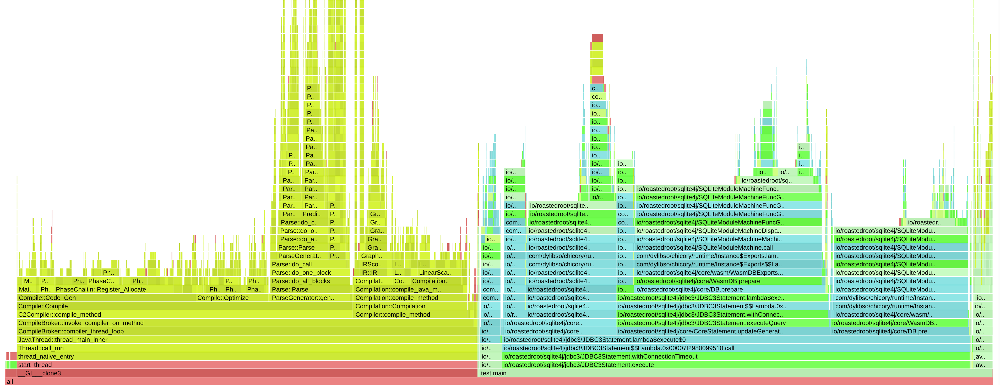
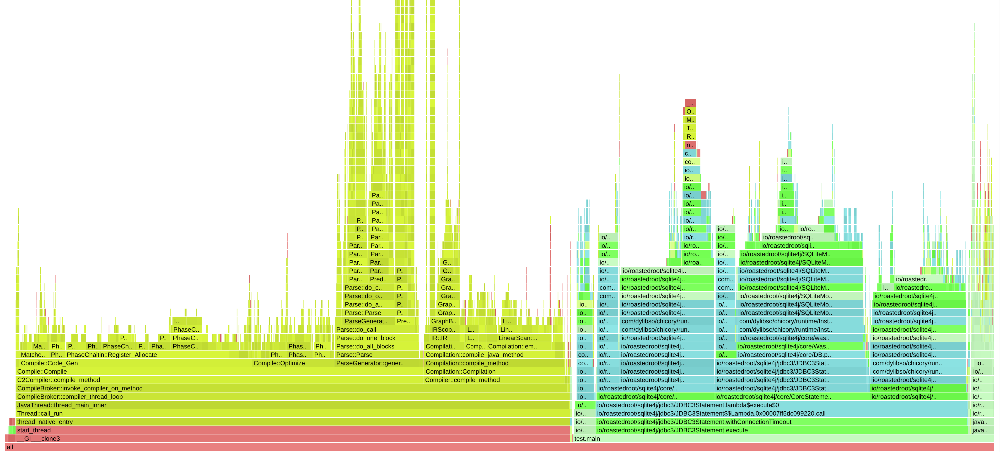
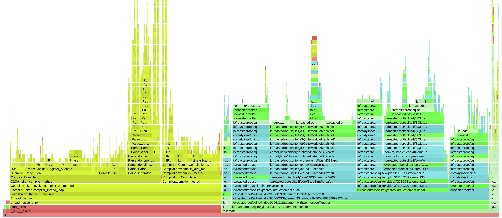

Splitting SQLite's large WASM functions for HotSpot C2 JIT compilation via Chicory AOT
Splitting func 482 (the VDBE main loop) improved execution from ~8s to ~7s. This is the hottest path in SQLite — every opcode runs through it — so enabling C2 JIT for its pieces paid off.
Splitting two more functions (func 180 func 1194) pushed it back to ~9s, worse than baseline. The spill/reload overhead (copying all locals through memory on every helper call) outweighed any JIT benefit for these less-hot functions.
Takeaway Where you split matters as much as whether you split. We need better profiling to identify which functions truly justify the splitting cost.


